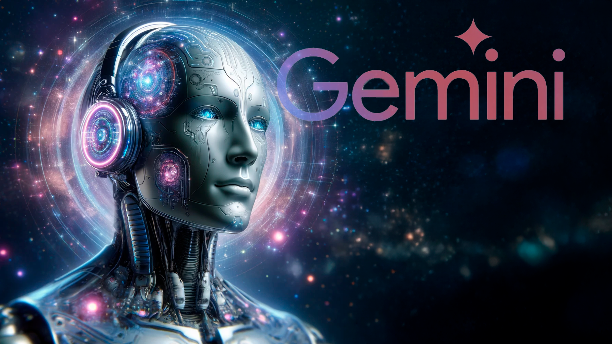
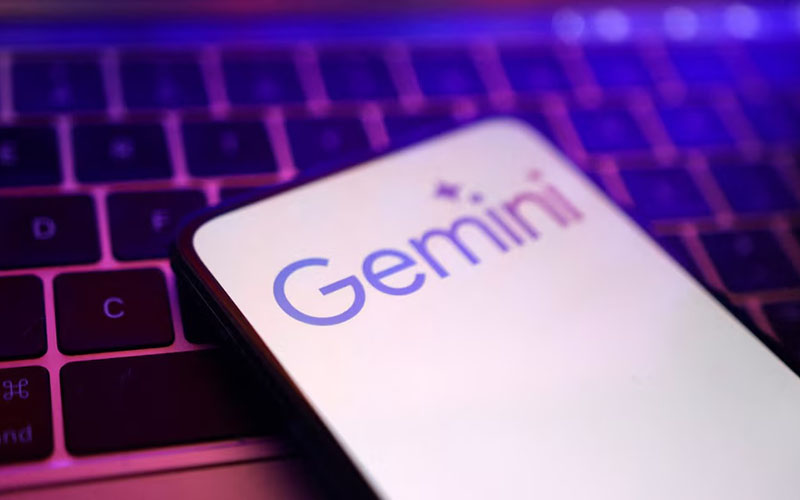
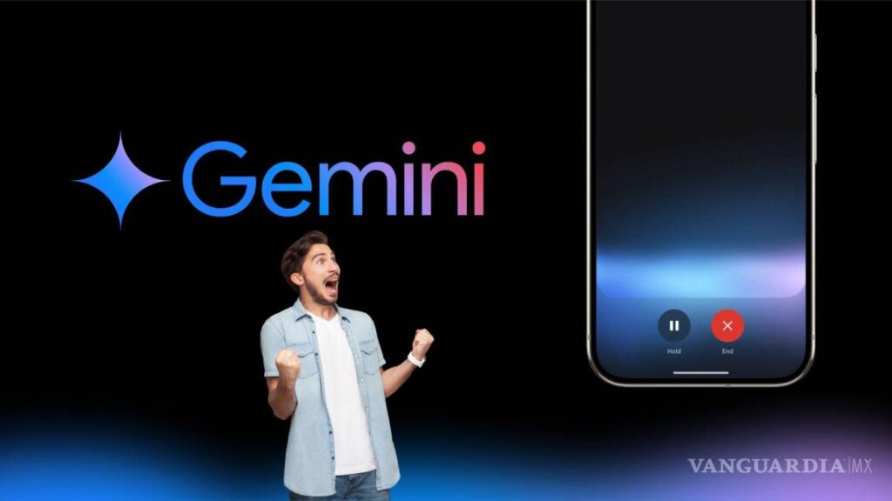

En 2022, los equipos de Google DeepMind comenzaron la fase inicial de investigación y conceptualización
para un modelo de IA multimodal de próxima generación. Se exploraron arquitecturas innovadoras y se
definieron los objetivos clave de razonamiento avanzado y comprensión multimodal.
2022: Detalles Iniciales
Durante este año, se sentaron las bases teóricas para la integración de diferentes tipos de datos
(texto, imágenes, audio, código) en un solo modelo. Se realizaron experimentos preliminares con
diferentes técnicas de aprendizaje automático y se identificaron los desafíos clave a superar.

2023: Fase de Desarrollo Intensivo
2023 marcó el inicio de la fase de desarrollo intensivo, con la asignación de recursos significativos
y la colaboración de múltiples equipos. Se comenzaron a construir los modelos base y se experimentó
con grandes conjuntos de datos multimodales.
2023: Avances Clave
Se lograron avances importantes en la arquitectura del modelo, permitiendo una mejor alineación
entre las diferentes modalidades de entrada. Se desarrollaron técnicas para el entrenamiento
eficiente de modelos a gran escala y se realizaron pruebas internas para evaluar las capacidades
iniciales de Gemini.

2024: Integración y Pruebas Amplias
En 2024, Gemini comenzó a integrarse en varios productos y plataformas de Google para pruebas más
amplias. Se recopiló retroalimentación valiosa de usuarios internos y externos, lo que permitió refinar
el modelo y mejorar su rendimiento en aplicaciones del mundo real.
2024: Despliegue Inicial
Durante este año, se realizaron los primeros despliegues limitados de Gemini en entornos controlados.
Se evaluaron sus capacidades en tareas como el razonamiento sobre imágenes, la comprensión de audio
y la generación de código, obteniendo resultados prometedores.

2025: Lanzamiento y Expansión
2025 fue el año del lanzamiento oficial de Gemini, marcando un hito en la evolución de la IA multimodal.
Desde su lanzamiento, se ha continuado trabajando en la expansión de sus capacidades y su integración
en un número creciente de aplicaciones.
2025: El Presente y el Futuro
Actualmente, Gemini sigue evolucionando, con actualizaciones periódicas que mejoran su rendimiento
y añaden nuevas funcionalidades. El enfoque se centra en hacerlo más accesible y útil para una
amplia gama de usuarios y aplicaciones.